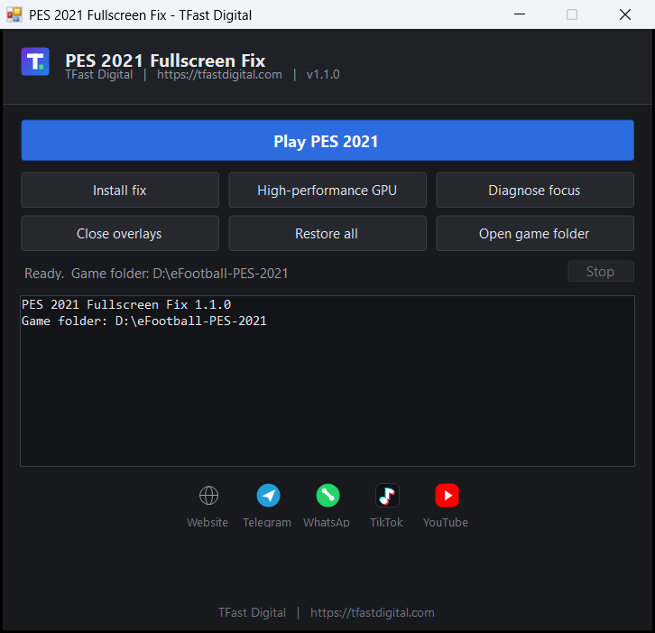

PES 2021 stops dropping to the taskbar
A small Windows tool that fixes the two things that break eFootball PES 2021 in fullscreen: the game minimising itself, and the game running on the wrong graphics processor. Applies the correct settings, verifies them, and can undo everything with one button.

What it fixes
Starts minimised
Writes Screen Mode and native resolution into the game's own settings file, so the mode switch succeeds even with display scaling above 100 percent.
Drops to the taskbar mid-match
Raises Windows' foreground lock so background programs are refused when they try to take focus, and restores the window in about a second if one gets through.
Wrong graphics processor
Enumerates the GPUs through DXGI, picks the discrete one, then verifies the choice against live GPU counters so you can see which processor is really rendering.
Overlays stealing focus
Closes known offenders while you play and re-checks, so recorders that restart themselves are closed again.
Reversible
Original values are saved first. One button puts everything back.
Portable
A single executable. Nothing installed, no services, no machine-wide changes.
Transparent
The whole fix is a readable PowerShell script. The GUI is a thin front end.
Download
Grab PES 2021 TFast Fix.exe from the latest release and
put it in the folder that contains PES2021.exe. Then
run it and press Play PES 2021.
# verify your download (hash is published with each release)
Get-FileHash "PES 2021 TFast Fix.exe" -Algorithm SHA256Usage
| Button | Action |
|---|---|
| Play PES 2021 | Apply the fix, start the game, keep it fullscreen. Enter does the same. |
| Install fix | Also start the watchdog with Windows, so any shortcut works. |
| High-performance GPU | Detect the GPUs, force the discrete one, verify it. |
| Diagnose focus | List the programs that take the foreground. |
| Close overlays | Close overlay processes now. |
| Restore all | Undo every change, with confirmation. |
| Open game folder | Open the install folder in Explorer. |
Command line
PES 2021 TFast Fix.exe -Action Play
PES 2021 TFast Fix.exe -Action Fix -InstallStartup
PES 2021 TFast Fix.exe -Action Gpu
PES 2021 TFast Fix.exe -Action Diagnose -DiagnoseSeconds 120
PES 2021 TFast Fix.exe -Action Overlays
PES 2021 TFast Fix.exe -Action Restore
PES 2021 TFast Fix.exe -Action Fix -GameDir "D:\games\PES2021"Engine only, no GUI
git clone https://github.com/tfastdigital6/pes2021-fullscreen-fix.git
cd pes2021-fullscreen-fix
powershell -ExecutionPolicy Bypass -File .\src\PES2021-Fullscreen.ps1 -Action FixTroubleshooting
| Symptom | What to do |
|---|---|
| Still drops to the taskbar |
Run Diagnose focus, then add the named program with
-ExtraOverlay name.exe.
|
| Image looks blurry | Set display scaling to 100 percent, or keep the high-DPI flag and run at native resolution. |
| Taskbar visible over the game |
Use Fullscreen rather than -Mode Borderless.
Windows 11 keeps the taskbar above borderless windows.
|
| Something is broken |
Press Restore all, then open an issue with the log
from %TEMP%\PES2021Fullscreen.log.
|
version.json from this site once per launch and shows a
link if a newer build exists. Nothing is downloaded or run
automatically. Disable it with -NoUpdateCheck.
About
Built by TFast Digital. Source code, issue tracker and releases live on GitHub.